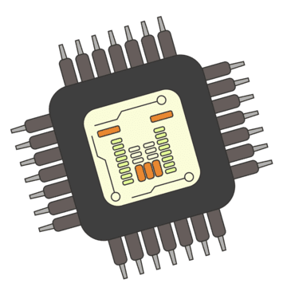

Open-source library for deriving solar radiation and heat flux from standard environmental sensors. Based on published research, works on Arduino, ESP32, Raspberry Pi, and other embedded platforms.

Billions of sensors exist right now, measuring simple parameters only because that's how they were labeled. We are overlooking the true value of mathematical approximation.
As demonstrated in countless applications involving these sensors and sensing devices, a combination of such sensors can yield derived parameters, values we often cannot obtain directly with perfect precision.
But do we always need perfect precision?
Let's end this information crisis. Restricting sensor potential is like blocking our future generations from building upon what we create today. Old or new sensors, built for various purposes, combined together, can derive far more advanced real-world parameters in applications that don't demand absolute precision. We are wasting resources.
A single such waste can cause millions of organisms to suffer, fall behind, or be restricted.
Contribute to the next wave of planetary recovery, we can build frameworks that rely on frameworks. FiaPhy is a research initiative focused on maximizing the potential of sensors, the near-future carriers of full-human automation, to help sustain existing and upcoming innovations while enabling them to work with our frameworks for generations to come.
Contributing to the good of everywhere.
FiaPhy works across multiple platforms and development environments.
You can install FiaPhy from the official releases page and use it directly in Arduino IDE, PlatformIO, or other C/C++ based workflows. Download link: GitHub Releases.
If you use Visual Studio Code, language support is available here: FiaPhy Language Support Extension.
For technical details and background material, use the Visit to Research Page link.
Yes. This is 100% free and open source. The library, research paper, and all source code are publicly available on GitHub.
This technology is based on the research paper "Temporal Derivative Soft-Sensing and Reconstructing Solar Radiation and Heat Flux from Common Environmental Sensors." It has been peer-reviewed and accepted into multiple conferences. We are continuing to improve the technology as part of active testing and development.
Yes. FiaPhy works across all major operating systems (Windows, macOS, Linux) and on embedded platforms (ESP32, Arduino, Raspberry Pi, etc.). The library integrates with your development environment (Arduino IDE, PlatformIO, VS Code) rather than directly with the operating system.
Use official links only. For GitHub releases, verify the repository URL is github.com/fiaos-org/fiaphy. Official releases are signed by the FiaOS organization.
FiaPhy supports Arduino (AVR, ARM Cortex-M0/M3/M4), ESP32/ESP8266, Raspberry Pi (Linux ARM), STM32, and other embedded platforms. You can use Arduino IDE, PlatformIO, or compile directly with GCC on Linux systems.
Download FiaPhy latest version and start making a project real.